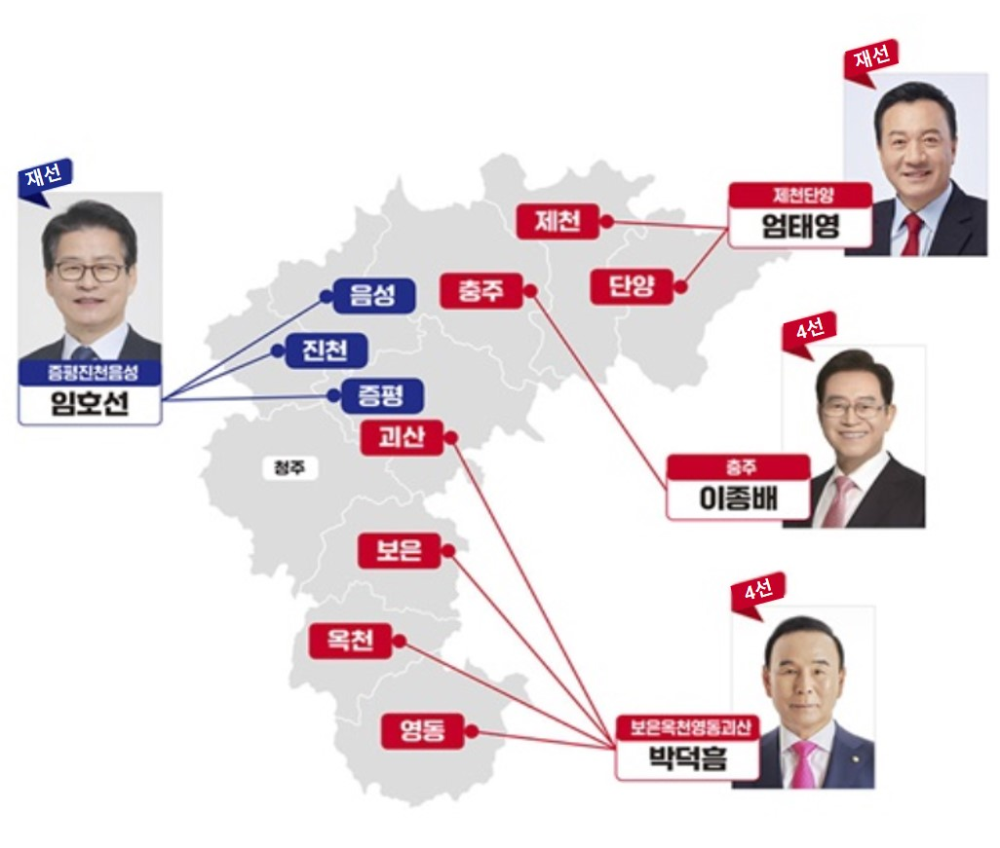

이종배
(충주)
* 산중,예결위

엄태영
(제천, 단양)
* 국토,예결위

박덕흠
(괴산 등)
* 농림,예결위

송재봉
(청주 청원)
* 산중위

이연희
(청주 흥덕)
* 정무위

이광희
(청주 서원)
* 행안위

이강일
(청주 상당)
* 정무위

임호선
(증평 등)
* 농림,예결위

|  | |
| 청주 지역(4명) - 국힘0, 민주4 | 청주 외 지역(4명) - 국힘3, 민주1 |
* (클릭시 세부정보 이동) 이름 → 프로필 등, 사진 → 국회 의정알림
| 순번 | 성명 | 사진 | 주요 동향 내역 |
| 1 |
이종배 |
|
|
| 2 |
엄태영 |
|
|
| 3 |
박덕흠 |
|
|
| 4 |
송재봉 |
|
|
| 5 |
이연희 |
|
|
| 6 |
이광희 |
|
|
| 7 |
이강일 |
|
|
| 8 |
임호선 |
|